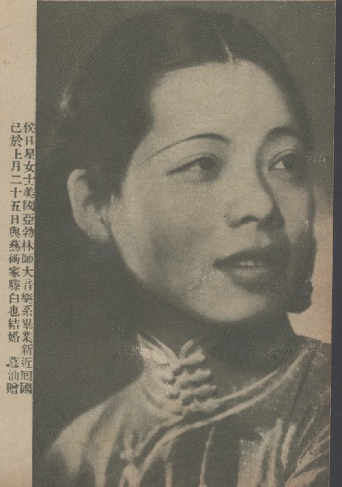

侯日星女士肖像及婚讯图注侯日星女士肖像及婚讯图注
S319 · 原图注署“慕汕／贈”；刊物待考 · 约1934年末（据婚讯推定）；原刊日期待考
图注称“侯日星女士”，记其毕业于美国“亞勃林師大音樂系”、新近回国，并已于“上月二十五日”与艺术家滕白也结婚。结合1934年11月25日婚礼报道，可将侯日星与侯涵辉相联系。The caption names Hou Rixing, describes her as a recent returnee and graduate of the music department of “Yabolin Normal University” in the United States, and states that she married Teng Baiye on the twenty-fifth of the preceding month. Read with the marriage notice dated 25 November 1934, it connects Hou Rixing with Hou Hanhui.
“侯日星”是报刊所用姓名，不能由此确定为原名。“亞勃林”与Oberlin的对应由同时代婚讯支持；具体英文注册名和学位仍须校方档案确认。

1934年11月25日婚礼报道Marriage notice: 25 November 1934 · 侯涵辉与家人Hou Hanhui and family